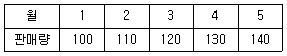
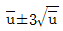
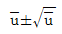
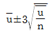
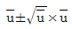
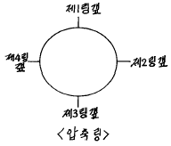

철도차량정비기능장 (2002-07-21 기출문제)
1과목: 임의 구분
1. 공급자에 대한 보호와 구입자에 대한 보증의 정도를 규정해 두고 공급자의 요구와 구입자의 요구 양쪽을 만족하도록 하는 샘플링 검사방식은?
- 규준형 샘플링 검사
- 조정형 샘플링 검사
- 선별형 샘플링 검사
- 연속생산형 샘플링 검사
(정답률: 96%)

2. 표는 어느 회사의 월별 판매실적을 나타낸 것이다. 5개월 이동평균법으로 6월의 수요를 예측하면?

- 150
- 140
- 130
- 120
(정답률: 92%)
3. u 관리도의 공식으로 가장 올바른 것은?




(정답률: 90%)
4. 도수분포표를 만드는 목적이 아닌 것은?
- 데이터의 흩어진 모양을 알고 싶을 때
- 많은 데이터로부터 평균치와 표준편차를 구할 때
- 원 데이터를 규격과 대조하고 싶을 때
- 결과나 문제점에 대한 계통적 특성치를 구할 때
(정답률: 87%)
5. 설비의 구식화에 의한 열화는?
- 상대적 열화
- 경제적 열화
- 기술적 열화
- 절대적 열화
(정답률: 75%)
6. 모든작업을 기본동작으로 분해하고 각 기본동작에 대하여 성질과 조건에 따라 정해놓은 시간치를 적용하여 정미시간을 산정하는 방법은?
- PTS법
- WS법
- 스톱워치법
- 실적기록법
(정답률: 85%)
7. 전기자 철심을 규소강판으로 성층하여 만드는 이유는?
- 가격이 싸다.
- 가공하기가 쉽다.
- 기계손을 작게 할수 있다.
- 와전류 손실을 작게 할수 있다.
(정답률: 82%)
8. 철도동력차량에서 사용하고 있는 제어 전원중 현재 국철에서 사용하고 있지 않는 전압은?
- 24V
- 31V
- 64V
- 100V
(정답률: 100%)
9. 객차에 전원을 공급하는 200㎾용 발전차 발전기 1대의 정격 전류는?
- 200A
- 250A
- 328A
- 360A
(정답률: 78%)
10. 인버터제어 전동차의 교류구간 역행시 전기흐름을 맞게 설명한 것은?
- PT - MCB - ADCg - MT - 콘버터 - 인버터 - TM
- PT - MCB - ADCg - 인버터 - TM
- PT - MCB - ADCg - MT - 인버터 - 콘버터 - TM
- TM - 콘버터 - 인버터 - MT - ADCg - MCB - PT
(정답률: 88%)
11. 인버터제어 전동차 증폭기별 부하 임피틴스가 틀린 것은?
- 제어증폭기 - Line 600Ω 모니터 8Ω
- 출력증폭기 - 300Ω
- 제어증폭기와 출력증폭기를 연결 시켰을 시 - 300Ω
- 출력증폭기와 모니터연결시 - 500Ω
(정답률: 75%)
12. 도시철도 5호선에서 사용하는 VVVF인버터의 전압과 주파수제어에 대한 설명으로 틀린 것은?
- 출력전압은 PULS-MODE와 PULS폭을 변경하면 모터의 고정자에 가해지는 전압을 제어 가능하다.
- 출력주파수는 GTO의 스위칭주기를 변경하므로써 주전 동기의 회전자계의 동기속도를 제어할 수 있다.
- 출력주파수에 의한 주전동기의 회전자계의 동기속도 제어는 역행과 회생제동 절환을 용이하게 하는 역할을 한다.
- 출력전압의 ON-OFF는 주전동기의 전,후진을 절환하는 역할을 한다.
(정답률: 95%)
13. 도시철도 6호선에 설치된 ATC 장치에 의한 과속검출 및 보호작용에 대한 설명으로 적절한 것은?
- 무인운전모드시 과속을 검지하면 ATC 시스템은 ATO와 TCMS에 상용만제동 체결 지령을 송신한다.
- 무인운전모드시 과속을 검지하면 ATC 시스템은 ATO와 TCMS에 비상제동 체결 지령을 송신한다.
- 무인운전모드시 과속을 검지하면 TCMS 시스템은 ATO와 ATC에 상용만제동 체결 지령을 송신한다.
- 무인운전모드시 과속을 검지하면 TCMS 시스템은 ATO와 ATC에 비상제동 체결 지령을 송신한다.
(정답률: 84%)
14. 도시철도 5호선용 TWC(Train to Wayside Communication) 장치에 대한 옳은 설명은?
- 열차와 지상간 양방향 통신링크로서 자동열차 주행진로 확인, 정차시분제어등의 정보를 지상과 송,수신 한다.
- 목표속도를 정하고 이에 실제속도가 미치지 못하면 역행력을 증가하도록 요구한다.
- 출입문을 자동으로 개폐하도록 지상장치와 통신 한다.
- 전동차가 운행한 거리를 지상의 마커와 통신하므로서 전동차의 위치를 알려주는 기능을 한다.
(정답률: 88%)
15. 발전전압이 60V, 발전전류 2200A, 주발전기의 효율이 80%일 때 디젤전기기관차의 구동마력은 약 몇 HP 인가?
- 60
- 222
- 120
- 362
(정답률: 91%)
16. 전기동력차에서 판토그래프의 높이와 관계 없는 것은?
- 접은 위치 260mm
- 최저 작용높이 490mm
- 해방시의 높이 1700mm
- 표준 작용높이 1260mm
(정답률: 83%)
17. 신호보안설비가 아닌 것은?
- ATT
- ATS
- ATP
- ATO
(정답률: 85%)
18. SIV에 대한 설명으로 맞는 것은?
- AC 380V와 전동차 제어전원 DC 100V를 공급하는 보조 전원장치
- 사령실과 기지, 전차로 연결된 기지보수자와 통신하는 전원장치
- AC 440V와 전동차 제어전원 DC 100V를 공급하는 보조 전원장치
- DC 1500V의 전차선 전압을 강하하는 전원장치
(정답률: 90%)
19. A.R.E 제동장치의 전자변을 사용하기 위한 회로중 상용제동용은 몇번인가?
- 71번
- 72번
- 73번
- 74번
(정답률: 89%)
20. 제동력 계산시 보조공기통의 용적은 제동통의 몇배로 하고 있는가?
- 0.35배
- 3.14배
- 3.25배
- 3.55배
(정답률: 84%)
2과목: 임의 구분
21. 다음중 교직류 겸용 저항제어 전기동차 밀착연결기에 설치되지 않은 공기관은?
- 주공기통관
- 제동통관
- 제동관
- 직통관
(정답률: 81%)
22. 디스크 제동장치의 설명이 아닌 것은?
- 제동실린더로 내구성이 있다.
- 자동 간극 조정 장치 내장으로 조정 불필요하다.
- 라이닝 교환 용이하다.
- 제동시 불꽃 발생이 다발하다.
(정답률: 90%)
23. 도시통근형디젤동차 비상제동 여유시간은?
- 약3초
- 약5초
- 약7초
- 약9초
(정답률: 91%)
24. 도시통근형디젤동차에서 D1A란?
- 자동배수밸브
- 토출밸브
- 응하중밸브
- E제어변
(정답률: 73%)
25. 디젤전기기관차 26L제동장치의 26C제동변에서 작동캠에 의하여 동작되는 변이 아닌 것은?
- 균형공기통차단변
- 억제변
- 비상변
- 균형공기조정변
(정답률: 81%)
26. 발전제동의 장점에 속하는 것을 나열한 것인데 다른 하나를 고른다면?
- 차륜 마모 및 이완현상이 없다.
- 저항제어가 필요하므로 별도의 저항기가 필요하다.
- 철분에 의한 대차 각부의 오손이 경감된다.
- 공주시간이 단축된다.
(정답률: 100%)
27. 다음 화차용 수용제동기로서 주로 조차, 장물차 등에 사용되는 수용제동기 형식은?
- 린드스트름식
- 체인식
- 기어식
- 마이나식
(정답률: 78%)
28. 복식중계변의 공급변에 공기가 급기되는 때는?
- 항상 공급
- 제동취급 때만
- 완해 되었을 때만
- 정차해 있을 때만
(정답률: 91%)
29. 전기동력차의 혼합제동 모드에 대한 설명으로 맞지 않는 것은?
- 비혼합 제동은 회생제동력의 실행이 없다.
- 혼합제동은 M차의 공기제동이 우선이다.
- 정상 혼합제동은 M차의 회생제동이 우선권을 갖는다.
- 혼합제동은 M차의 회생제동력을 사용한다.
(정답률: 69%)
30. 다음 중 차체가 어복형 언더프레임 구조의 차종은?
- 유개차
- 무개차
- 유조차
- 장물차
(정답률: 84%)
31. 신형새마을호객차의 회전식 의자(Reclining seat)의 특징으로 틀린 것은?
- 자유로이 방향을 바꿀수 있다.
- 등받이 경사각도를 적당히 조절할 수 있다.
- 한 자리씩 임의로 등받이 각도가 조절된다.
- 암레스트가 설치되어 있지 않으나, 발거리가 있다.
(정답률: 87%)
32. 자동연결기 3작용에 해당하지 않는 것은?
- 쇄정위치
- 개정위치
- 견인위치
- 개방위치
(정답률: 85%)
33. 차량의 축간거리에 관한 설명으로 틀린 것은?
- 고정축거란 1개 대차의 전후축의 차축 중심거리를 말한다.
- 전축거란 1량의 중심축과 중심축의 축중심거리를 말한다.
- 국유출도건설규정에서 4.75m이내로 제한하고 있다.
- 축간거리는 클수록 탈선의 우려가 크다.
(정답률: 85%)
34. 차축유의 필요조건으로 맞지 않는 것은?
- 온도에 의한 점도변화가 민감할 것
- 마찰을 가급적 감소시킬 것
- 금속을 부식시키기 않을 것
- 내화성이 있을 것
(정답률: 84%)
35. 기본냉동 사이클과 관계없는 것은?
- 열증가장치
- 압력증대장치
- 압력감소장치
- 열흡수장치
(정답률: 90%)
36. 새마을형동차 에어백의 자동높이 조정장치 완해변은 양측의 압력차이가 얼마 이상일 때 작동하는가?
- 0.5bar
- 1.3bar
- 1.8bar
- 1.5bar
(정답률: 87%)
37. 다음 승강대 자동문이 설치된 차량에서 차장실 외부 승강대 측면에 설치된 조정반의 푸시버튼의 종류가 아닌 것은?
- 좌 혹은 우측의 전체 문열음
- 전체 문닫음(차장차 마지막 문은 제외)
- 개폐 확인용 신호등
- 제동장치 속도신호 불량시 바이패스 스위치
(정답률: 89%)
38. 횡 오일댐퍼의 역할은 무엇인가?
- 전후 진동 억제
- 좌우 진동 억제
- 상하 진동 억제
- 피칭 진동 억제
(정답률: 96%)
39. R 400 m의 곡선에 중량 98톤인 디젤기관차가 108km/h 속도로 주행시 곡선선로에서의 원심력은 몇 kg인가?
- 24500
- 23500
- 22500
- 25500
(정답률: 79%)
40. 다음중 기관사가 객실로 안내방송을 할 수 있도록 설치된 디젤전기기관차 방송장치의 구성요소가 아닌 것은?
- 제어증폭기
- 전광판
- 마이크로폰
- 출력증폭기
(정답률: 85%)
3과목: 임의 구분
41. 터널 미기압파는?
- 열차의 선두부가 터널에 도입하면 터널내에 압축파가 형성되며 이것이 터널내를 전파하여 반대측의 갱구에 도달하고 외부에 펄스모양의 압력파를 방사 하는 것
- 열차가 속도향상에 따라 개활구간에서 발생하는 압력파
- 열차가 터널 돌입시에 터널 밖에 발생하는 압력파
- 열차가 터널로부터 토출 할 때 발생하는 압력파
(정답률: 93%)
42. 표정속도는?
- 운전구간 거리를 정차시간을 뺀 순수한 운전시간으로 나눈 것
- 운전구간 거리를 정차시간을 포함한 실제운전시간으로 나눈 것
- 운전구간에서 총 저항력이 평형이 된 속도
- 운전구간에서 차량의 성능에 의하여 결정되는 속도
(정답률: 95%)
43. 신교통 AGT(Automated Guideway Transit) 장점은?
- 승차감 양호, 진동소음 적고 자동운행으로 운영비 절감
- 비, 눈 결빙시 마찰력 증대
- 가열장치로 시스템 복잡
- 고무타이어로 장거리 적합
(정답률: 95%)
44. 코일스프링의 상수가 5㎏/mm이고 여기에 100㎏의 하중이 작용하고 있다. 이 코일스프링의 변위량은 몇 mm인가?
- 5
- 10
- 15
- 20
(정답률: 96%)
45. 다음중 제동배율을 구하는 형식으로 옳은 것은?
- 전제륜자가 차륜을 누르는 힘/제동통피스톤에 작용하는 힘
- 제동통피스톤에 작용하는 힘/전제륜자가 차륜을 누르는 힘
- 전제륜자압력/전차중량
- 제륜자 이동 평균 치수/피스톤 행정
(정답률: 72%)
46. 차량의 진동은 운동상태에 따라 변화한다. 다음 중 성질에 의한 차량진동의 종류와 관계가 적은 것은?
- 헌팅(Hunting)
- 요잉(Yawing)
- 롤링(Rolling)
- 피칭(Pitching)
(정답률: 75%)
47. 치차비에 대한 설명으로 틀린 것은?
- 차량의 인장력은 치차비에 정비례한다.
- 차량의 인장력은 동륜직경에 반비례한다.
- 치차비가 클때는 기동가속도가 크게된다.
- 치차비가 적을때는 최고속도가 낮게된다.
(정답률: 73%)
48. 전동차의 관성계수 중 맞는 것은?
- 0.10
- 0.15
- 0.20
- 0.25
(정답률: 84%)
49. 철도차량의 1차헌팅 주파수는 대체적으로 얼마인가?
- 1∼2Hz
- 2∼3Hz
- 3∼4Hz
- 4∼5Hz
(정답률: 100%)
50. 반지름γ, 견인력 F와 토크t의 관계가 맞는 것은?
- γ= F· t
- F = γ· t
- t = F· γ2
- t = F·γ
(정답률: 64%)
51. 내연기관의 연소실을 측정하였더니 냉각수에 의한 손실이 28%, 배기 및 복사손실이 32% 였다. 기계효율이 80%라면 정미 열효율은?
- 40%
- 32%
- 28%
- 23%
(정답률: 84%)
52. 디젤기관의 동력장치는 실린더 헤드 조립체, 피스톤 및 커넥팅 로드 조립체, 실린더 라이너 조립체로 구성되며 이장치의 조립시 잘못된 것은?

- top groove only 표시된 압축링은 반드시 제1압축링 홈에 조립한다.
- 포크로드 바스켓은 마춤 못이 있는 쪽의 일련번호가 포크 로드의 일련번호와 맞아야 한다.
- 압축링의 조립은 갭의 위치를 그림과 같이 시계방향 90° 간격으로 조립한다.
- 스프링이 들어 있는 오일링은 맨 밑의 오일링 홈에 조립한다.
(정답률: 73%)
53. 디젤전기기관차의 GT26CW형에 설치된 윤활유 과열 탐지기가 윤활유 온도 260° F가 되면 기관은 어떤 현상을 일으키는가?
- 기관을 정지 시킨다.
- 기관 속도가 유전으로 된다.
- 기관 속도가 260rpm 이상 상승치 못한다.
- 기관 속도를 500rpm 이하로 냉각 시킨다.
(정답률: 90%)
54. 디젤전기기관차 기관계통에서 60psi 완해변이 설치되어 있는 장치는?
- 공기 압축기계통
- 연료계통
- 냉각수계통
- 윤활유계통
(정답률: 83%)
55. 연료소비율을 표시할 때 사용되는 단위는?
- kg/h.m2
- g/h.m2
- g/km2
- g/(PS.h)
(정답률: 88%)
56. 과급기에 의한 효율증진 요인이 아닌 것은?
- 급기 압축을 위한 에너지 보급
- 동일 냉각면적에서 냉각손실 감소
- 동일 부하에 대한 연료소비율 감소
- 동일 온도 범위에서 냉각손실 증가
(정답률: 80%)
57. 디젤전기기관차 조속기의 기관정지 조정은 최저회전(정상유전 또는 저유전)에서 속도 셋팅 피스톤 연장부와 연료제한 너트와의 간격을 얼마로 조정하여야 하는가?
- 1/16"
- 1/32"
- 3/32"
- 5/16"
(정답률: 85%)
58. 디젤전기기관차의 ORS조정을 효과적으로 할 수 있는 것은?
- 기관 무부하 8노치
- 기관 유전회전
- 기관 정지
- 기관 무부하 2노치
(정답률: 84%)
59. 2행정사이클 기관의 소기에서 블로우바이(blow by)와 같은 뜻을 가지고 있는 것은?
- 쇼오트
- 블로우다운
- 포오팅
- 와일드핑
(정답률: 74%)
60. 흡, 배기 밸브가 동시에 열려있는 기간은?
- 밸브 오우버랩
- 리드
- 캠각
- 래그
(정답률: 79%)